Embarkation - Sunday, November 10, 2024
Today is embarkation day for our seven day cruise to the Mexican Riviera on the NCL Bliss. We booked this cruise kind of last minute based on a promotion and a price reduction. Not too long after booking, we were able to change our cabin to to a nicer one for no additional cost, since prices had fallen even more since we booked. All we had to do is call our travel agent and requested a move to the new room. We went from a forward facing cabin to an aft facing cabin, which has a nicer balcony. NCL does not offer refunds for price drops (after final payment), instead you get a future cruise credit, so we opted for a nicer room.
We left Ventura around 8:30am for the 80 mile drive to San Pedro. Sunday morning traffic was light and we cruised south on US-101, I-405 and I-5, averaging 75 mph until we got near LAX where all five south bound lanes came to a complete stop for about two minutes. Down the road we didn’t see a wreak or any indication of what caused the traffic to stop. After that the traffic was back up to the normal speed, which is probably more like 80+ mph, since most cars are going faster than me.
At the port, the parking lot was mostly full and since we thought that I would need to park on the far side of the lot, I dropped Becky off close to the terminal and drove off in search of a place to park. As luck would have it, after driving about 50 feet, I spotted an open spot. I unloading our remaining luggage and took note of where I parked the car. Then I went off to catch up with Becky. The lines inside the terminal were short and Becky had already made it through check-in and was in the waiting area when I caught up with her.
We were able to board about 30 minutes after arriving in the waiting area. I had a cup of coffee and a cookie while waiting. While waiting we said hello to the Assistant General Manager, Marites, who was walking through the lobby of the terminal. A few minutes later one of the valets came up to Becky and I and asked if we were ready to board. We were given a personal escort onto the ship about five minuets before anyone else. First time that has happened; usually we are in one of the priority boarding groups with about 20 to 50 other passengers. Later we found out that Marites had arranged that for us.
The valet took us to our room so we could drop off our carry on bags. Our cabin steward was cleaning our balcony when we arrived and when he was done, he came inside to gave us the normal first day room orientation. Then Becky did some unpacking before we went out to sign up for some of the events. We made reservations for two shows and signed up for the Latitudes wine tasking and Latitudes mixology event.
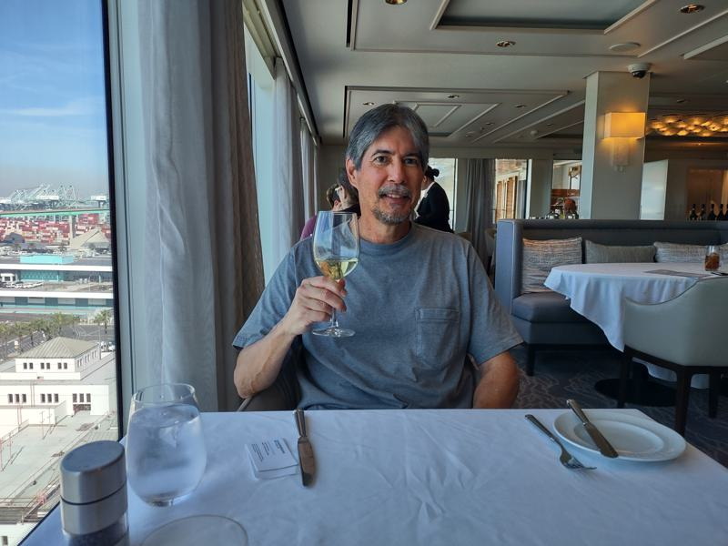
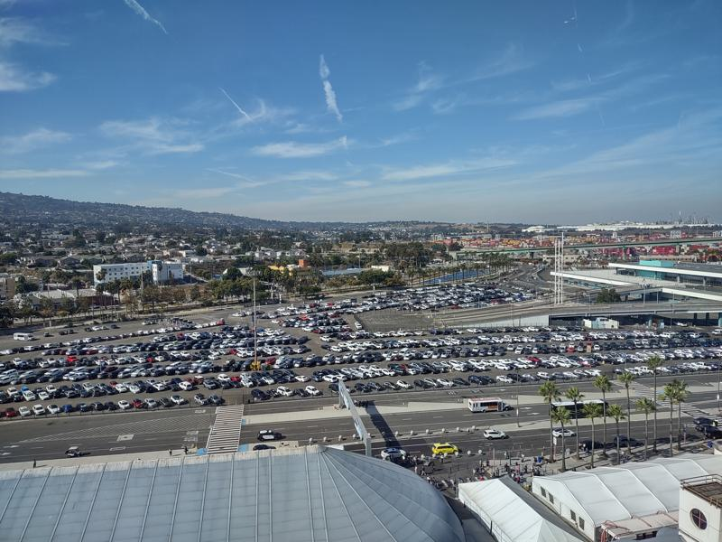
We had lunch in Haven dining room. Becky had shrimp scampi, I had a Cobb salad and we shared mushroom flat bread.
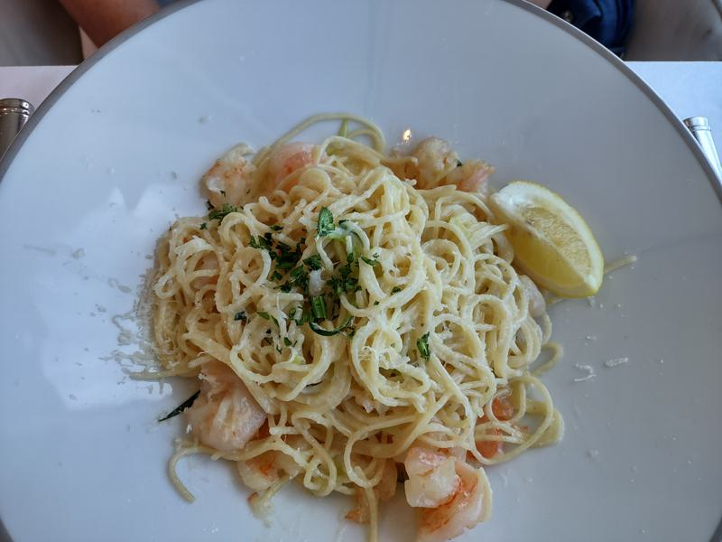

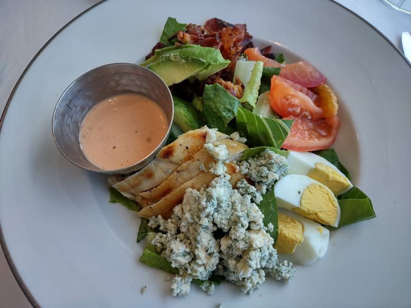
We skipped dessert, but we did order carrot cake, served only at lunch to have with this evening’s dinner. Our plan was to visit the buffet to see what was being offered on the first day. I like the Indian food in the buffet and Becky wanted a dessert only available in the buffet on embarkation. The buffet is very popular on the first day and it’s usually very crowded. Becky found the Pecan Cake that she likes and I went to look at the Indian food.
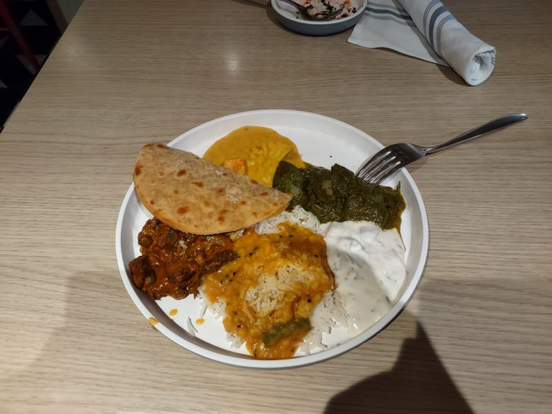
Back to the room for sail away and have a glass of the champaign that came with the room. The weather was perfect, mostly sunny, 70F and no wind. We sat on the balcony until the ship had made it to the open ocean. Then we got changed for drinks and dinner.
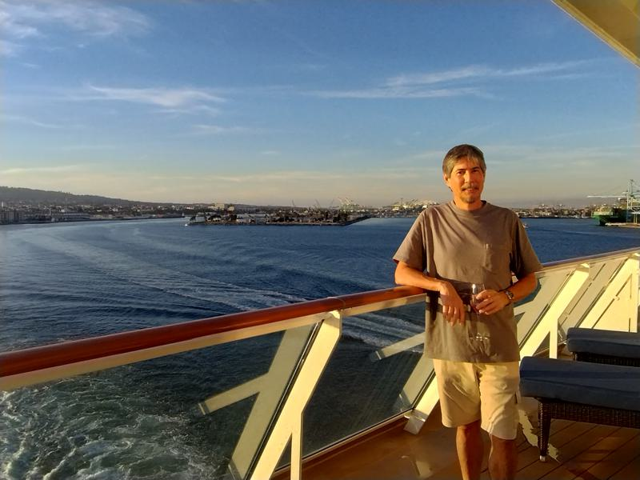
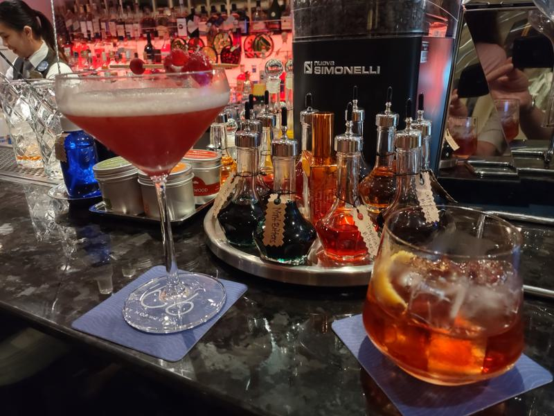
We had dinner in the Haven dinning room. Becky had surf and turf and I had one crab cake (two crab cakes are just too much).
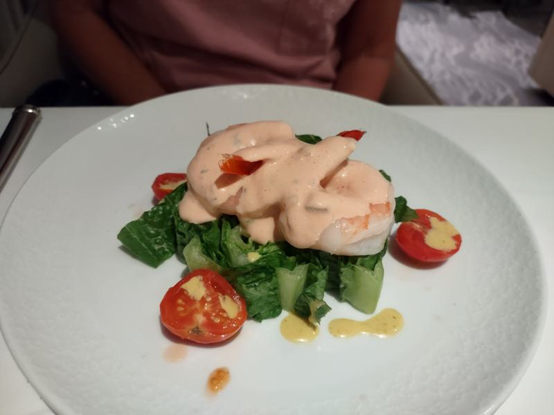
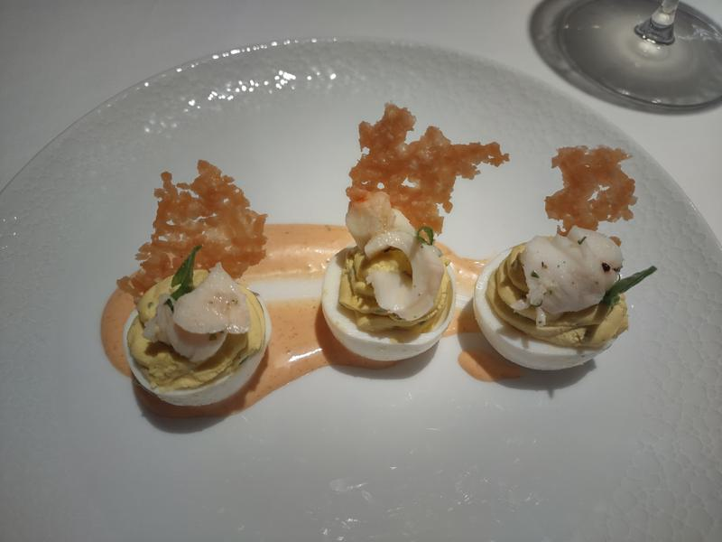
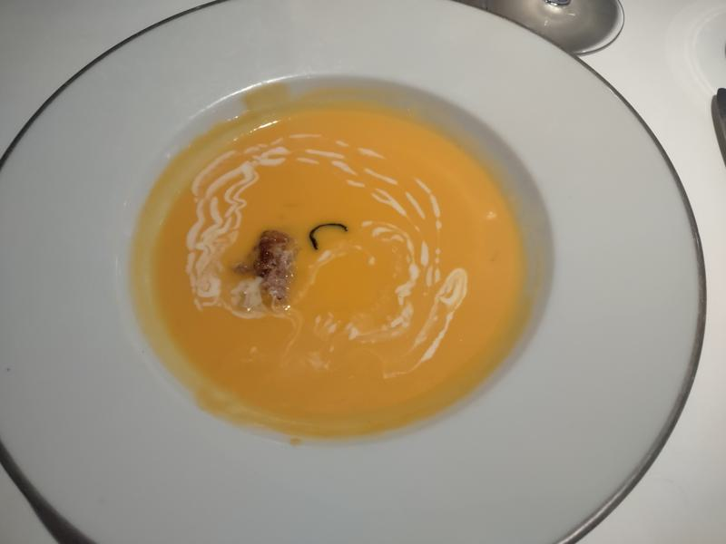
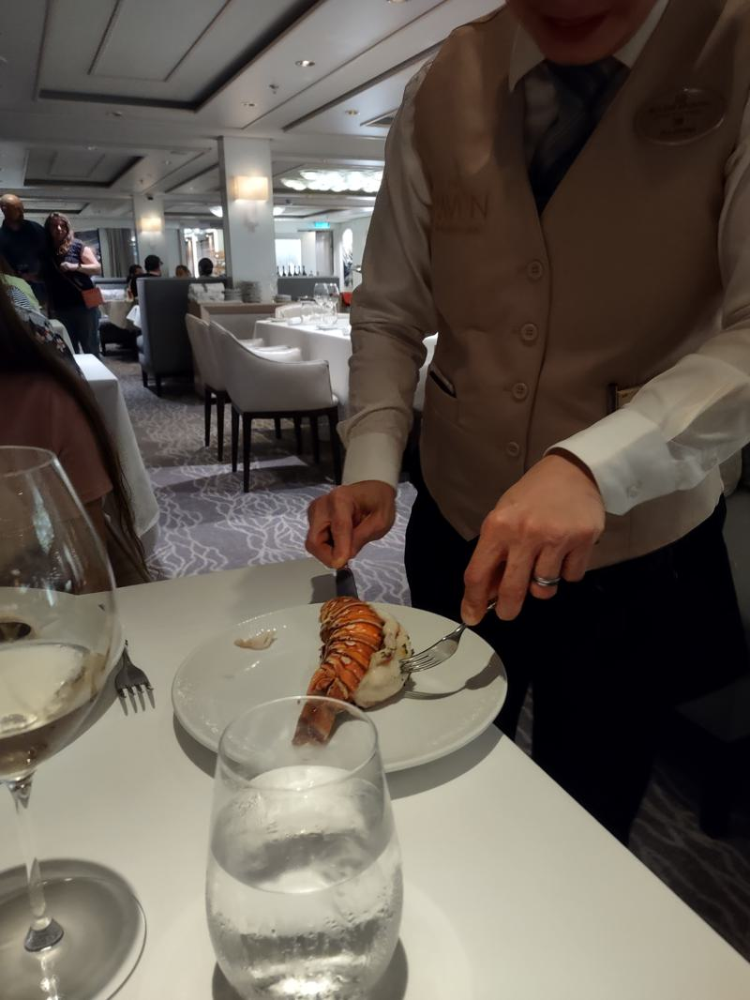
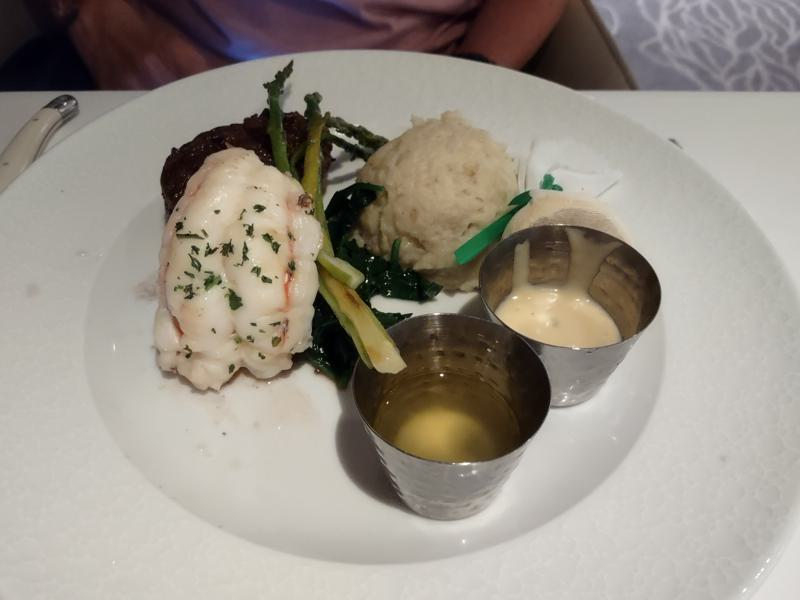

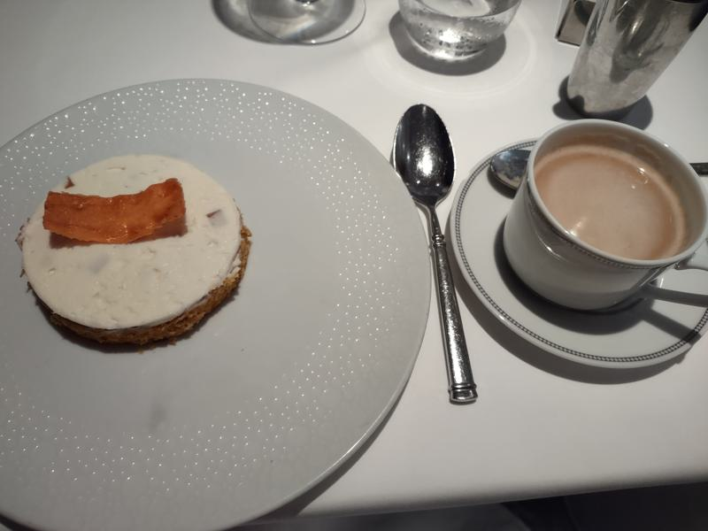
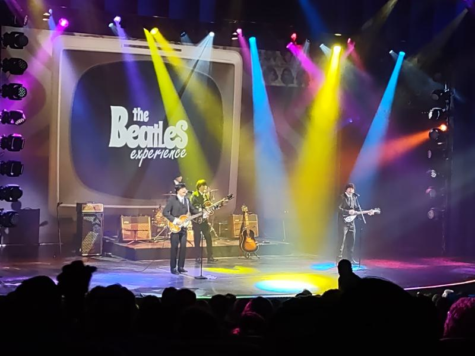
Today I got in 15,764 steps according to my Fitbit.
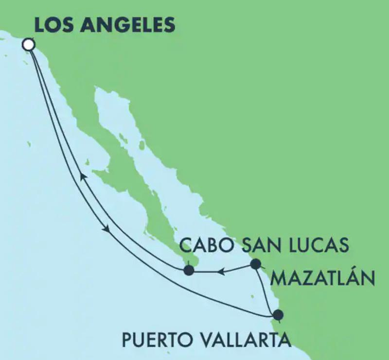
Sea day - Monday, November 11, 2024
I was up at 5:30am. After my shower, I made a cup of coffee with the Nepresso machine in our room and worked on my laptop. A Nespresso machine is a type of coffee maker that uses pre-portioned, single-use coffee capsules (also known as pods) to brew espresso and coffee. I’m not a fan of the coffee from the Nepresso machine, because the taste of the coffee, but it’s convenient. After Becky got ready, we walked from the back of the ship to the front and then up six flights of stairs to the Haven compound to have another cup of coffee in the lounge. The coffee from the self service machine is really good. I bring my Nissan thermal mug which will hold one Americano and one Cafe Latte. I had a few slices of pineapple, watermelon, mango and cantaloupe as my pre-breakfast. Becky had a cup of Cappuccino and a pastry. Then we went to the dining room for our real breakfast. I had a Poached Egg Avocado Toast and Becky had a Ham and Cheese omelet.
After breakfast we attended morning trivia.
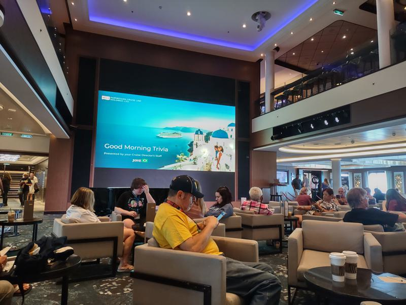
We got a score of 15 out of 20 and tied with three other teams and received a deck of playing cards for winning. Here are some of the questions with answers that we didn’t know. In which year did the British start using the decimal currency? Answer: 1971 Where in the world can you find the worlds longest street? Answer: Toronto, Canada How many strings does a cello have? Answer: 4 What was the first Woman’s magazine called? Answer: Ladies Mercury Which legendary king was killed at the Battle of Camelford? Answer: King Arthur
After trivia we talked with Mike and Tanya for a while. We met them on a cruise a few years ago.
We have $200 of non-refundable on board credit that we need to spend. In the gift shop, which is duty free, we bought: Jack Daniels Tennessee Honey, Baileys Expresso and Grand Marnier. We still need to spend $89.
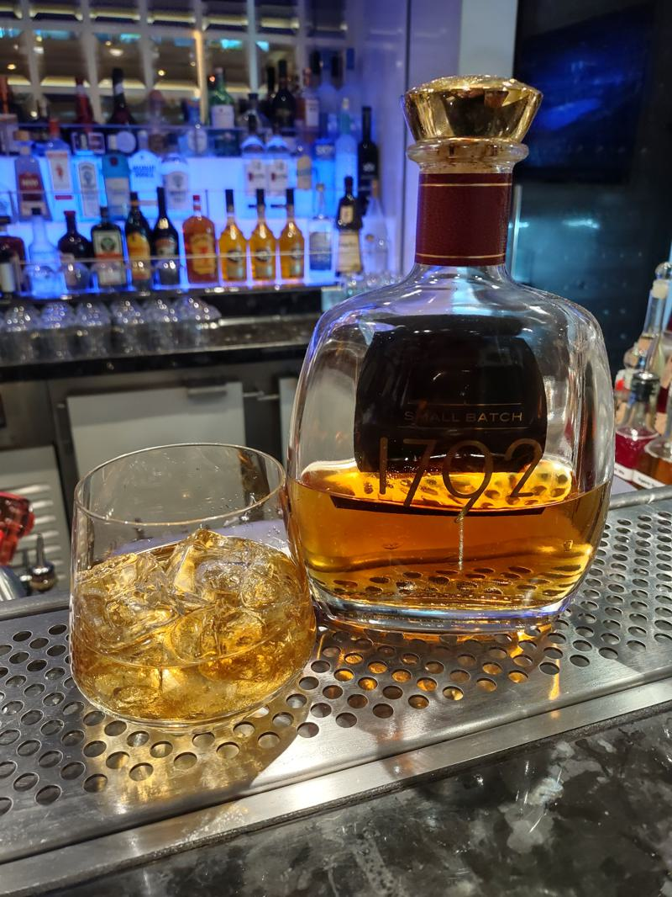
Tonight was the Latitude party which started at 6pm. We arrived about 10 minutes early to met up with Mike and Tanya. The doors opened promptly at 6pm and we had a chance to say hello to the captain and senior staff. Our friend Ivan, the chief engineer was home on vacation so we met his alternate, a nice guy from Serbia. There are six ambassadors on board and we had reserved seats up front for us. I sat next to a lady named Kathy who cruises I think cruises for about 30 weeks a year. She liked to talk about all the great cruise deals she is getting.
Mike, Tanya, Becky and I left the Latitude party about 630pm to walk upstairs to the Haven party which started at 7pm. While we were waiting for the party to start, Becky, Tanya and Mike had Raspberry Martinis. Then Grace and William came into the lounge. We had met them on a cruise about a year ago. After greeting the Captain and staff we had fun talking to Mike, Tanya, William and Grace. Kathy who was at the latitude party arrived and said hello. I had encourage her to attend. She was reluctant since she didn’t know anyone. I said, now you know us, we can talk and you can leave when you want. At least she would know for the next cruise if she wanted to attend. Becky talked to Kathy for awhile and then the GM sec came to talk to Kathy. After awhile I asked Kathy what she thought of the party and she said that she probably wouldn’t attend again.
After the Haven party wound down, Becky and I went to have a late dinner. Becky had Lobster bisque, rack of lamb. I had pork belly, trout. For desert we had a scoop of ice cream.
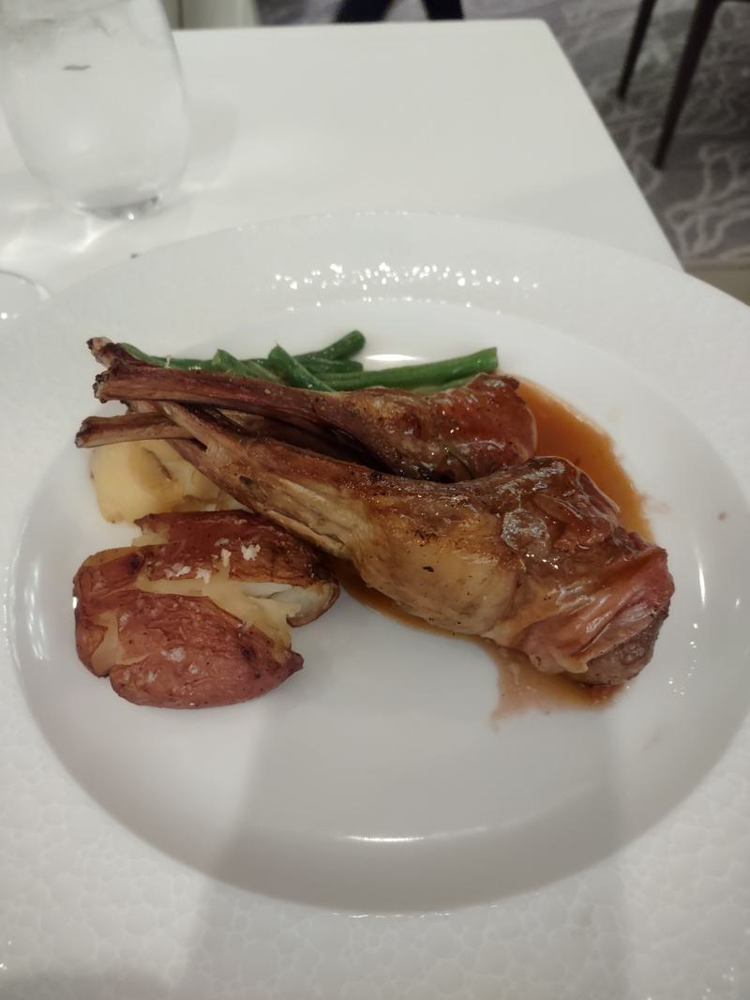
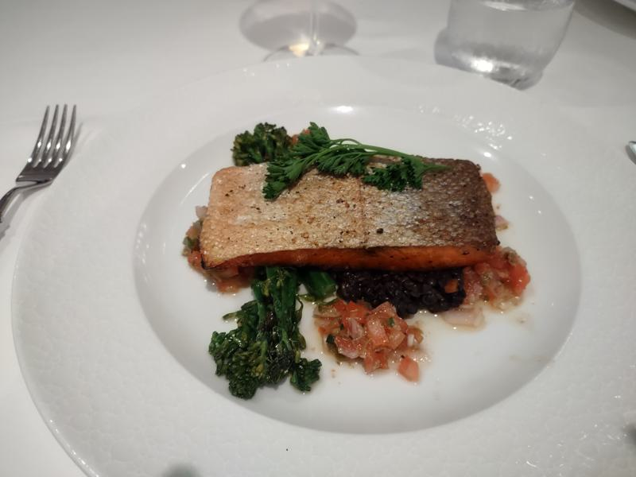
We each had a small scoop of ice cream for dessert. Since it was late in the evening, we skipped the coffee.
Fitbit step count for Monday: 15,764
Cabo San Lucas - Tuesday, November 12, 2024
Today’s port is Los Cabo San Lucas and it is tender port. The weather was sunny and warm. Since our cabin is in the back of the ship we didn’t get a good view of the sail in.
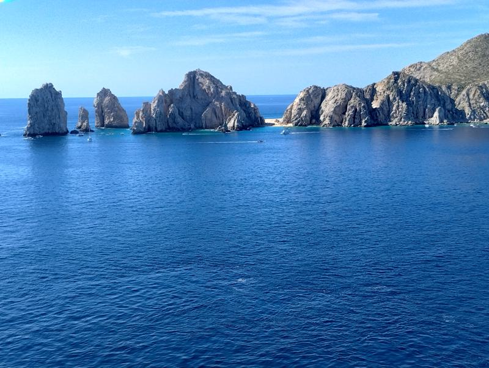
We spend the day up on the Haven sun deck, which we had pretty much to ourselves.
We had dinner at Ocean Blue, with Grace and William, a retired couple we met on last year on a cruise. Grace retired from Kaiser Permamente health care. They grew up in Taiwan. After dinner we went to the theater to watch a new show called Icons. Icons is a concert experience featuring the songs of musical legends from the last six decades.
Fitbit step count for Tuesday: 9,089
Mazatlan - Wednesday, November 13, 2024
Today we are in Mazatlan Mexico. The weather has been sunny and warm. Today we went to the ship’s library to look for a note that Sabrina and Michaela left for us tucked in a book when they cruised on the ship to Alaska this summer. I originally left them a note in the book which they found and in turn they left me a note to find the next time I was on the ship. I found the book where the note was supposed to be but the note was gone.
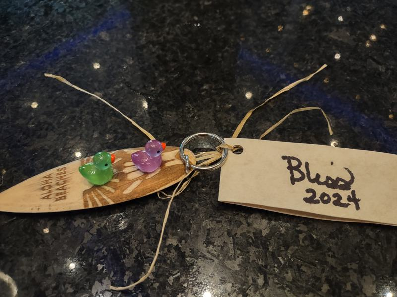
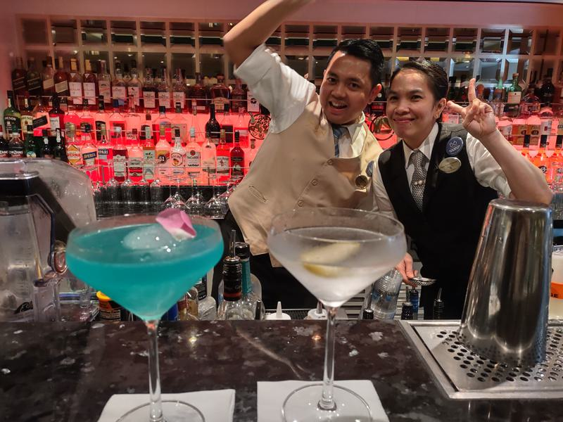
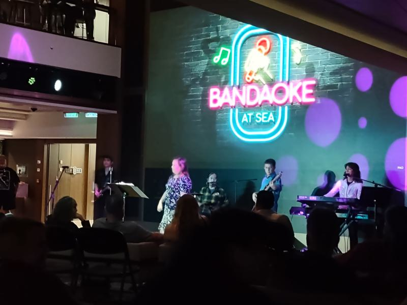
Fitbit step count for Wednesday: 11,192
Puerto Vallarta - Thursday, November 14, 2024
Today we are in Puerto Vallarta. The weather was mostly sunny and warm.
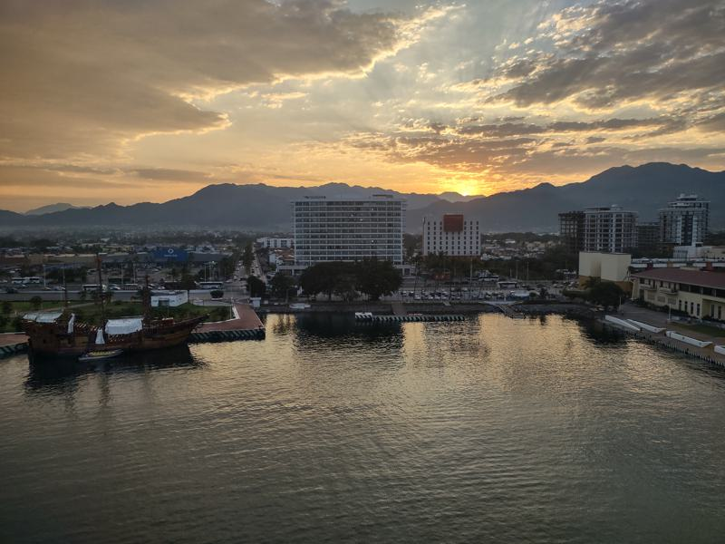
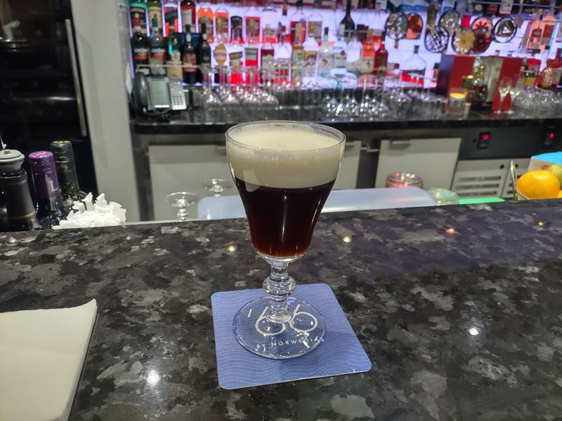
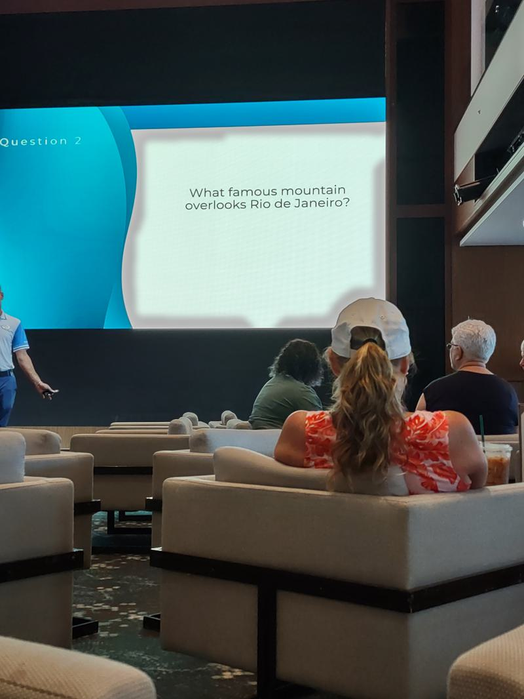
At sea - Friday, November 15, 2024
Today was a sea day. We attended trivia, wine tasting,
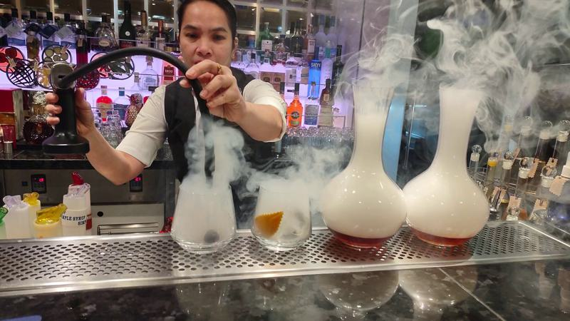
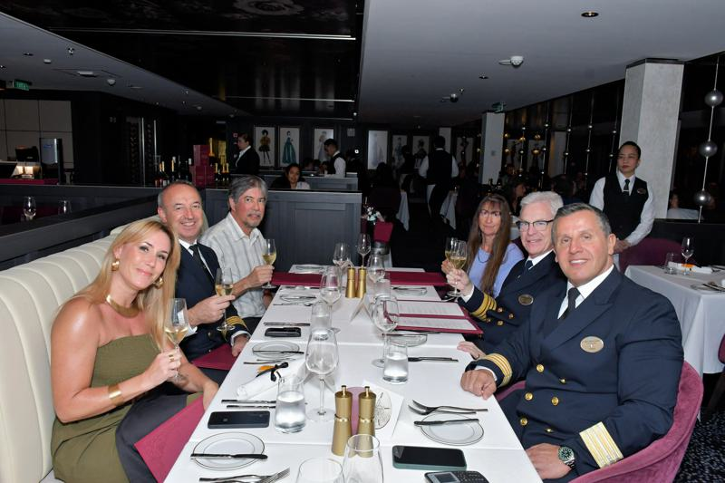
At Sea - Saturday, November 16, 2024
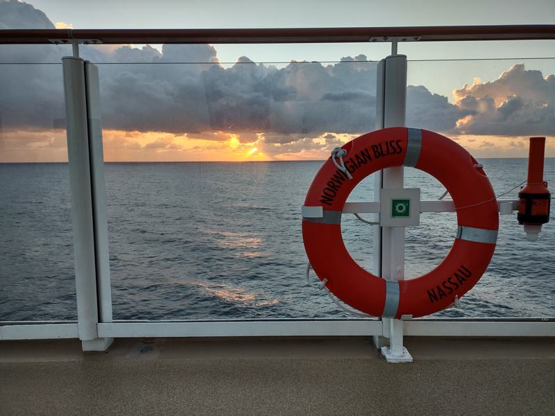
Disembark - Sunday, November 17, 2024
After breakfast we disembarked, loaded the car and drove home.